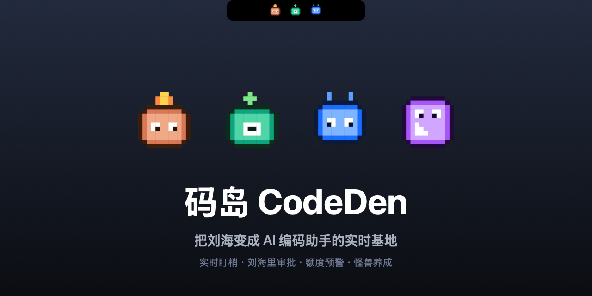

实时状态
收起态显示运行数、审批提醒和完成状态；展开后看到任务、工具、项目和最近会话。
Open-source macOS notch app for AI agents
码岛把 Codex、Claude Code 的运行状态搬到 MacBook 刘海上： 谁在执行、谁等你审批、谁刚完成，一眼就知道。

Why it exists
当 Codex 和 Claude Code 同时跑任务时，它们可能正在执行、等待权限、已经卡住， 或者早就完成了。码岛把这些状态变成屏幕顶部一个随时可见的小岛。
它不是另一个需要你盯着看的窗口，而是贴在工作流边上的状态层。 你像老板一样看进度，需要处理时再介入。
收起态显示运行数、审批提醒和完成状态；展开后看到任务、工具、项目和最近会话。
Claude Code 请求权限时，直接在刘海里点允许或拒绝，决定会回写给 bridge。
点击任务卡片，优先跳回对应 Codex thread、Claude Desktop 会话或终端 tab。
像素小怪兽、果冻开合、芯片电音和 agent 配色，让盯 AI 干活变得没那么焦虑。
正在使用 Codex · 48%
等待 Claude Code 审批
Designed for daily use
它满足一点“老板欲”：能看到不同 AI 进程在干嘛。也保留一点玩具感： 小怪兽会跳，岛体会弹，状态有声音提醒。更重要的是，它真的能少切窗口。
Download
首次打开如果被 Gatekeeper 拦截，请右键 NotchIsland.app，然后选择“打开”。